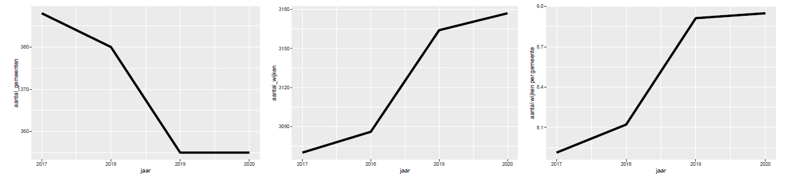
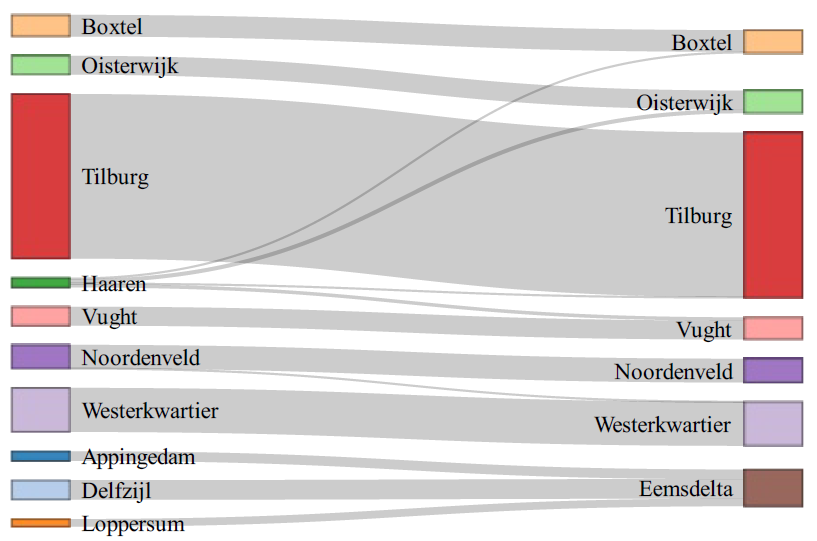

Deze repository bevat de code voor grenswijzigingen. Dit is een fork en update van https://github.com/VNG-Realisatie/grenswijzigen.
Introductie
Het grondgebied van Nederland kan op diverse manieren worden opgedeeld. De opdeling waar het in deze repository over gaat is de opsplitsing in gemeenten, wijken en buurten. Daarbij geldt dat buurten optellen tot wijken en wijken optellen tot gemeenten.
Deze indeling ligt niet vast. Het aantal gemeenten neemt de laatste jaren af door fusies. Een grotere gemeente kan taken die worden toegewezen aan gemeenten gemakkelijker oppakken. Het aantal wijken neemt geleidelijk aan toe. Een gemeente kan zelf bepalen hoe zij hun grondgebied willen opdelen in wijken en buurten. Wellicht doordat het aantal gemeenten af neemt, is er behoefte een gemeente op te delen in meer wijken.

Door deze ontwikkelingen wijzigen de grenzen van gemeenten en wijken regelmatig . Dat heeft consequenties als men de huidige wijkkenmerken wil vergelijken met het verleden. Immers, de huidige wijk bestond mogelijk nog niet in voorgaande jaren. Daarmee is het lastig om trends in de ontwikkelingen in wijkkenmerken scherp te ontwaren. Bij wijkkenmerken kan men bijvoorbeeld denken aan het aandeel 65-plussers, de gemiddelde huishoudgrootte of de gemiddelde huizenprijs in een wijk. Zie voorbeeld hieronder waarbij de gemeente Haaren van 2020 naar 2021 opgaat in de vier gemeenten Boxtel, Oisterwijk, Tilburg, en Vught.

Het CBS rapporteert de wijzigingen in gemeentegrenzen en hoe wijkkenmerken over de jaren heen vergeleken kunnen worden. Voor de wijkgrenzen is er geen jaarlijkse publicatie over hoe wijkkenmerken over de jaren heen vergeleken kunnen worden. Het CBS geeft enkel aan of de cijfers vergeleken mogen worden met het jaar daarvoor. Als de cijfers niet vergelijkbaar zijn met het vorige jaar wordt niet aangegeven hoe deze getransformeerd moeten worden.
In principe kan het CBS of de gemeente op basis van zogenaamde microdata exact uitrekenen wat de wijkkenmerken van vorige jaren zijn voor de huidige wijkgrenzen. Deze microdata bestaat uit kenmerken op persoons- of huishoudensniveau. Voor het rekenen met microdata moeten de privacy regels goed gewaarborgd worden.
Indien er geen beschikking is over microdata, of als men niet met privacy gevoelige data wil of kan rekenen, kunnen er toch schattingen worden gemaakt van de wijkkenmerken van vorige jaren met de huidige wijkgrenzen. Deze repository bevat R-script waarmee dergelijke schattingen gemaakt kunnen worden.
Zie deze link (voor het laatst bijgewerkt in 2022) voor een dashboard die grenswijzigingen inzichtelijk maakt https://datamonitoringvng.shinyapps.io/grenswijzigingen/
Modellen voor grenswijzigen
Alle modellen zijn gebaseerd op het volgen van adressen door de tijd heen. Hierdoor kan worden achterhaalt bij welke wijk een adres hoort op in elk jaar. Vervolgens zijn er verschillende manieren om deze informatie te benutten. In deze repository zijn er drie modellen geïmplementeerd voor het uitvoeren van grenswijzigingen.
Model.0 gaat uit van een uniforme verdeling van wijkkenmerken over de wijk heen. Dat wil zeggen dat wordt aangenomen dat kenmerken, bijvoorbeeld het aantal 65-plussers, gelijkelijk verdeeld zijn over de wijk. Bij het delen van de wijk in kleinere stukken kunnen deze kenmerken dan evenredig met het aantal adressen in deze stukken worden toegekend. In Model.0 zijn adressen gedefinieerd als postcode + huisnummer. Huisnummertoevoegingen en gebruiksfunctie van adressen worden niet meegenomen. Model.0 is daarmee een heel toegankelijk model dat een redelijk goede grenswijziging uitvoerd, maar dat faalt in geval van wijken met veel huisnummertoevoegingen (bijvoorbeeld hoogbouw of flats) en wijken met veel adressen zonder woonfunctie (bijvoorbeeld winkels, scholen en fabrieken).
Model.1 werkt gelijk aan Model.0 maar neemt daarentegen wel de huisnummertoevoeging en gebruiksfunctie van het adres mee. In Model.1 worden alleen adressen met een woonfunctie beschouwt. Daarmee presteert Model.1 aanzienlijk beter dan Model.0 voor wijken met veel huisnummertoevoegingen en andere gebruiksfuncties dan wonen. Model.1 gaat echter nog wel altijd uit van een uniforme verdeling van de wijkkenmerken over de wijk heen. Daarnaast wordt er een VNG api gebruikt om de huisnummertoevoegingen en gebruiksfunctie te achterhalen Dat kost het tamelijk veel tijd om uit te voeren voor alle adressen in Nederland. Daarom zijn ook vooraf berekende omzetmatrices beschikbaar gesteld in deze repository.
Model.2 neemt een andere benadering. Hier worden adressen opgedeeld in blokken gedefinieerd door de overlappingen tussen wijken in het ene jaar en de wijken in het volgende jaar. Voor elk blok wordt een variabele gedefinieerd die het gemiddelde van een wijkkenmerk in dat blok weergeeft. Voor deze variabelen wordt een stelsel formules opgesteld zodat de sommen van de adressen maal de gemiddelden gelijk zijn aan de wijkkenmerken zoals gepubliceerd door het CBS. Daarnaast wordt aangenomen dat deze gemiddelden van jaar tot jaar nauwelijks wijzigen. Dat lijkt een redelijke aanname: bijvoorbeeld het gemiddelde aantal 65-plussers per adres zal van jaar tot jaar ongeveer gelijk zijn. Dit stelsel vergelijkingen wordt opgelost wat tot grensgewijzigde data leidt. In dit model wordt eveneens uitgegaan van adressen met huisnummertoevoegingen en woonfunctie.
Installatie
Pakket als bibliotheek
Het pakket van ‘grenswijzigingen’ kan geïnstalleerd worden vanuit GitHub als:
# Install the development version from GitHub
devtools::install_github("reidhin/grenswijzigen") Opzetten project
Indien gewenst kan de gehele code ook vanuit GitHub gecloned worden.
De hoofdfunctie voor het uitvoeren van de code is de functie wrapper_vertaal_naar_peiljaar in het bestand grenswijzigingen.R. Indicatoren die bestaan uit aantallen (bijvoorbeeld aantal inwoners in de wijk of aantal 65-plussers in de wijk) worden intern op een andere manier behandeld dan indicatoren die bestaan uit percentages of aandelen (bijvoorbeeld gemiddelde huishoudgrootte of aandeel arbeidsongeschikten per wijk). De functie wrapper_vertaal_naar_peiljaar probeert op basis van kolomnamen zelf in te schatten of het om aantallen of aandelen gaat.
Voorbeeld
Hieronder staat een basis voorbeeld hoe de code gebruikt kan worden. Het is noodzakelijk dat het data-frame naast de indicatoren ook de kolommen ‘jaar’ en ‘wijkcode’ bevat. De wijkcode bevat de gwb-code van de wijk. Het ‘jaar’ refereert aan de wijkindeling die voor de indicatoren gebruikt is.
library(grenswijzigen)
require(cbsodataR)
#> Loading required package: cbsodataR
require(dplyr)
#> Loading required package: dplyr
#>
#> Attaching package: 'dplyr'
#> The following objects are masked from 'package:stats':
#>
#> filter, lag
#> The following objects are masked from 'package:base':
#>
#> intersect, setdiff, setequal, union
kolommen_te_laden <- c(
"WijkenEnBuurten", "Gemeentenaam_1",
"AantalInwoners_5", "k_65JaarOfOuder_12",
"GemiddeldeHuishoudensgrootte_32"
)
# laad de kerncijfers per wijk voor 2017 en 2018
df <- rbind(
cbs_get_data(
id="83765NED",
WijkenEnBuurten = has_substring("WK"),
select = kolommen_te_laden
) %>% mutate(jaar=2017),
cbs_get_data(
id="84286NED",
WijkenEnBuurten = has_substring("WK"),
select = kolommen_te_laden
) %>% mutate(jaar=2018)
) %>% rename(
wijkcode=WijkenEnBuurten,
gemeentenaam=Gemeentenaam_1,
aantal_inwoners=AantalInwoners_5,
aantal_65plus=k_65JaarOfOuder_12
)
# laat de wijken in Wageningen zien
print(filter(df, grepl("Wageningen", gemeentenaam)))
#> # A tibble: 14 × 6
#> wijkcode gemeentenaam aantal_inwoners aantal_65plus GemiddeldeHuishouden…¹
#> <chr> <chr> <int> <int> <dbl>
#> 1 "WK028900 … "Wageningen… 33885 5125 1.7
#> 2 "WK028901 … "Wageningen… 4570 800 1.9
#> 3 "WK028901 … "Wageningen… 4725 440 2.3
#> 4 "WK028902 … "Wageningen… 2480 5 1.1
#> 5 "WK028903 … "Wageningen… 2750 540 2.2
#> 6 "WK028904 … "Wageningen… 2085 360 2.2
#> 7 "WK028905 … "Wageningen… 3175 30 1.4
#> 8 "WK028906 … "Wageningen… 6895 1435 1.7
#> 9 "WK028907 … "Wageningen… 5190 750 1.8
#> 10 "WK028908 … "Wageningen… 2505 560 1.6
#> 11 "WK028909 … "Wageningen… 3530 505 1.4
#> 12 "WK028910 … "Wageningen… 2525 710 1.9
#> 13 "WK028911 … "Wageningen… 1175 405 2.3
#> 14 "WK028912 … "Wageningen… 1370 385 2.1
#> # ℹ abbreviated name: ¹GemiddeldeHuishoudensgrootte_32
#> # ℹ 1 more variable: jaar <dbl>
# Omzetten van de data van 2017 naar 2018
df_omgezet <- wrapper_vertaal_naar_peiljaar(
as.data.frame(df),
peiljaar = 2018,
model="model.2"
)
#> ----------------------------
#> De volgende kolommen worden niet meegenomen in de grensomzetting
#> wijkcode
#> gemeentenaam
#> jaar
#> gwb_code
#> ----------------------------
#> [1] "Aantal rijen omgezette data-frame: 3085"
#> [1] "Aantal rijen omgezette data-frame: 3085"
# laat de wijken in Wageningen zien
print(filter(df_omgezet, grepl("Wageningen", gemeentenaam)))
#> gwb_code jaar aantal_inwoners aantal_65plus GemiddeldeHuishoudensgrootte_32
#> 1 028901 2018 4725.000 440.000000 2.300000
#> 2 028901 2017 4729.277 422.893689 2.254756
#> 3 028902 2017 2480.632 2.473616 1.086976
#> 4 028902 2018 2480.000 5.000000 1.100000
#> 5 028903 2018 2750.000 540.000000 2.200000
#> 6 028903 2017 2751.938 532.249797 2.167788
#> 7 028904 2018 2085.000 360.000000 2.200000
#> 8 028904 2017 2086.185 355.258833 2.174806
#> 9 028905 2018 3175.000 30.000000 1.400000
#> 10 028905 2017 3177.715 19.140689 1.371744
#> 11 028906 2018 6895.000 1435.000000 1.700000
#> 12 028906 2017 6916.329 1349.684404 1.593126
#> 13 028907 2018 5190.000 750.000000 1.800000
#> 14 028907 2017 5198.683 715.267173 1.731809
#> 15 028908 2018 2505.000 560.000000 1.600000
#> 16 028908 2017 2507.733 549.068773 1.562280
#> 17 028909 2018 3530.000 505.000000 1.400000
#> 18 028909 2017 3533.583 490.668989 1.356198
#> 19 028910 2018 2525.000 710.000000 1.900000
#> 20 028910 2017 2527.318 700.728511 1.864797
#> 21 028911 2017 1175.408 403.367688 2.285217
#> 22 028911 2018 1175.000 405.000000 2.300000
#> 23 028912 2018 1370.000 385.000000 2.100000
#> 24 028912 2017 1370.201 384.197838 2.091296
#> berekend gemeentenaam wijkcode
#> 1 FALSE Wageningen WK028901
#> 2 TRUE Wageningen WK028901
#> 3 TRUE Wageningen WK028902
#> 4 FALSE Wageningen WK028902
#> 5 FALSE Wageningen WK028903
#> 6 TRUE Wageningen WK028903
#> 7 FALSE Wageningen WK028904
#> 8 TRUE Wageningen WK028904
#> 9 FALSE Wageningen WK028905
#> 10 TRUE Wageningen WK028905
#> 11 FALSE Wageningen WK028906
#> 12 TRUE Wageningen WK028906
#> 13 FALSE Wageningen WK028907
#> 14 TRUE Wageningen WK028907
#> 15 FALSE Wageningen WK028908
#> 16 TRUE Wageningen WK028908
#> 17 FALSE Wageningen WK028909
#> 18 TRUE Wageningen WK028909
#> 19 FALSE Wageningen WK028910
#> 20 TRUE Wageningen WK028910
#> 21 TRUE Wageningen WK028911
#> 22 FALSE Wageningen WK028911
#> 23 FALSE Wageningen WK028912
#> 24 TRUE Wageningen WK028912Modellen voor omzetten postcode naar regio
In sommige gevallen is data op postcode niveau beschikbaar, vaak betreft dat data die op 4-cijferige postcode gepubliceerd is. Deze data kan worden omgezet naar regionaal niveau, dat wil zeggen, naar data op wijk- of gemeenteniveau. Voor deze omzetting kan dezelfde techniek worden gebruikt als voor de grenswijzigingen zoals hierboven beschreven onder ‘Model.0’.
Voor het omzetten van data op postcode niveau naar regionaalniveau is ook een functie opgenomen in dit pakket. Zie voor een voorbeeld hoe deze functie te gebruiken hieronder.
# Voor het omzetten van data op postcode niveau naar data op regionaalniveau
# kan de volgende procedure gebruikt worden
library(grenswijzigen)
require(cbsodataR)
require(dplyr)
# laad de bevolkingsgrootte per 4-cijferige postcode
df.postcode <- cbs_get_data(
id = "83502NED",
Geslacht = "T001038",
Leeftijd = "10000",
Postcode = has_substring("PC"),
Perioden = "2020JJ00",
select = c("Geslacht", "Leeftijd", "Postcode", "Perioden", "Bevolking_1")
) %>% mutate(
Postcode = gsub("\\D", "", Postcode)
) %>% select("Postcode", "Bevolking_1")
# zet om naar wijk
df.vertaald = vertaal_postcode_naar_regio_op_peiljaar(
df.postcode,
oorspronkelijk_jaar = 2020,
peiljaar = 2021,
type_kolommen = "aantal",
regionaalniveau = "wijk"
)
#> [1] "Aantal rijen omgezette data-frame: 3243"
# Hieronder staat de omgezette postcode data
print(head(df.vertaald))
#> gwb_code Bevolking_1 jaar
#> 1 001400 23400.192 2020
#> 2 001401 19864.358 2020
#> 3 001402 14374.962 2020
#> 4 001403 18545.000 2020
#> 5 001404 11841.837 2020
#> 6 001405 3996.121 2020
# Voor het vergelijken met data op wijkniveau
# laad de bevolkingsgrootte uit de KWB-data per wijk
df.wijk <- cbs_get_data(
id="85039NED",
WijkenEnBuurten = has_substring("WK"),
select = c("WijkenEnBuurten", "AantalInwoners_5")
)
# Vergelijk deze output met de schatting hierboven.
print(head(df.wijk %>% arrange(WijkenEnBuurten)))
#> # A tibble: 6 × 2
#> WijkenEnBuurten AantalInwoners_5
#> <chr> <int>
#> 1 "WK001400 " 22735
#> 2 "WK001401 " 19695
#> 3 "WK001402 " 14055
#> 4 "WK001403 " 18405
#> 5 "WK001404 " 12355
#> 6 "WK001405 " 3290Bekende fouten
- Het adres met postcode 8754HA en huisnummer 23 lijkt in 2021 ten onrechte aan de gemeente Harderwijk te zijn toegewezen in de bronbestanden van het CBS.
Licentie

Dit werk valt onder een Creative Commons Naamsvermelding-NietCommercieel-GelijkDelen 4.0 Internationaal-licentie.
Project Organization
│ DESCRIPTION
│ grenswijzigingen.Rproj
│ LICENSE.md
│ NAMESPACE
│ README.md
│ README.Rmd <- De top-level README voor ontwikkelaars die gebruik maken van het project.
│
├───data <- Plek waar de omzetmatrices worden opgeslagen
│
├───data-raw
│ │ AdresDataOphalen.R
│ │ config_grenswijzigingen.R
│ │ maak_omzet_matrices.R
│ │ main_maak_alle_matrices.R <- script om de omzetmatrices vanaf de bron opnieuw te maken
│ │
│ ├───external <- de externe data kan hier worden opgeslagen
│ │
│ └───models
│
├───man <- help-bestanden
│
└───R
data.R
laad_omzet_matrices.R
util_functies_grenswijzigingen.R
vertaal_naar_peiljaar.R
vertaal_naar_peiljaar_limSolve.R
vertaal_postcode_naar_regio_op_peiljaar.R <- dit is de functie voor het omzetten van data op postcode niveau
wrapper_vertaal_naar_peiljaar.R <- dit is de hoofdfunctie voor het omzetten van grenzen